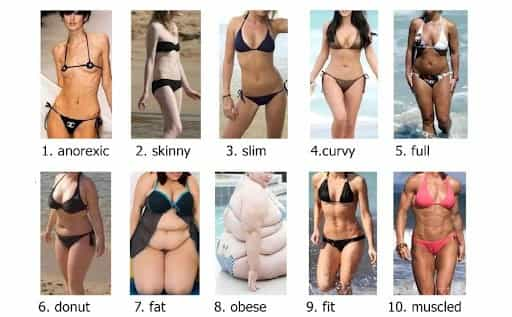

< < < Back
How To Find A Girl For A Relationship – Return Of Kings
It’s no secret that in our society, more and more women are becoming completely incapable of forming a life-long bond. Years of riding the cock carousel permanently alters women’s brains, to such an extent that they often times can’t resist one more ride with the bull.
Beyond this, feminism has corrupted many a woman’s mind—it’s taught them to fight and compete against men, rather than aligning with them. It’s taught women that they’re entitled to whatever their hearts desire, that they can be overweight and ugly, but still deserve a prince charming, and it’s effectively ruining marriages for men all across the West.
But, there is hope. Do not buy into the idea of a unicorn; all women fundamentally have the same nature. But, this does not mean that there aren’t some women which are vastly superior for a relationship than others. Here’s how you can find these women.
All About Demographics

Want a girl like this? Join a yoga club.
This is probably one of the most important topics when it comes to developing relationships, so it shocks me that it isn’t talked about more often. Demographics is the idea that certain types of women flock to certain venues, social circles, and organizations.
For example, what type of women do you think go out to frat parties every single weekend? Definitely not the type of girl you want to have a relationship with. What about the women who go clubbing four days a week, known in some circles as bottle rats? Again—you definitely don’t want to make these women your significant other.
But what about the women who frequent other, less slut-attracting organizations? Frequenting these types of places is the best way to meet high quality women capable of relationships:
- Book stores
- Yoga studios
- The gym
- Cooking classes
- Churches
- Social organizations (homeless shelter, dog care volunteers, etc.)
- Activist groups (not for feminism of course)
- Spiritual groups
Generally speaking, these are the best venues to meet high quality women at. Before you decide where to go, however, you must decide what you want.
What Do You Want?

Obviously we can all agree that we want women who are chaste, loyal, and feminine. No shit. Everyone wants these things, and even just finding a woman with these characteristics nowadays will be somewhat of a challenge. But let’s go a little bit deeper. What else do you want? Unless you can vividly picture the type of girl that you want, you will most likely let her pass you by. Start by imagining what she’ll look like. Blonde hair? Brunette? Slim? Thick? Blue eyes?
Next, let’s get to the personality characteristics. Do you want a woman who will be able to go to the gym with you? Who’s fierce and assertive? Then maybe you should meet a woman at the gym.
Do you want a woman who’s passionate about changing the world, and could align her energy with yours to achieve something greater as a couple? Then maybe you should consider frequenting spiritual groups, activist organizations, and churches.
Or maybe you want a woman who is very nurturing, feminine, and caring? Then consider volunteering at homeless shelters, taking care of disabled children, and meeting women through there.
The point is that different personality types will flock to different venues—you have to decide what type of girl you want, and attend these venues. Now, as a side note, if you’re a newbie I do NOT recommend that you get into a relationship.
The reason why is because as a newbie, you need to go out and get experience so that you can develop some game. Only then will you be capable of passing your girlfriend’s shit tests, leading her in a calm, decisive way, and defusing her negative, emotional arguments with ease.
Meeting The Women
I would recommend that you actually choose a venue that you’ll enjoy. If you’re an intellectual, join a debate group that talks about issues, and go to book stores because you want to.
This is in very stark contrast to when you’re trying to sleep with girls from nightclubs. Most men clearly go to bars and night clubs to meet girls, but with social groups it’s the opposite. You go to these organizations, because you like what they offer you, and the women come as only an added benefit.
If you simply go to pickup girls, the people in the organization will notice. They’ll be turned off by your overt negs, push/pull techniques, and other “gamey” things that you do. Instead, simply go to enjoy the event. Network with the guys there, make friends with everyone, and eventually if you have even a modicum of game, you’ll be able to pick up on which women like you and which don’t.
From here, it’s best to invite them out in a casual, non-sexual way. For example, if I met a girl at a yoga studio (which I’m a fan of), I might make some small talk with her for a few sessions, and then if we connect I’ll mention that I’m having a party at my place, or going out that weekend, or something.
If she’s interested in you, she’ll say yes. Then, from here, it’s time to take things to the next level.
A Word of Warning

One of the biggest mistakes that guys make when trying to get a girlfriend, is that they try to initiate the relationship. Big mistake. Masculinity at its essence is freedom. True men want to be free; they value independence, going forth into the world, and liberation.
Women, on the other hand, value security, safety, and comfort—this is why they should be the one who initiates the relationship. “Okay, Jon…so then how do I get her to initiate the relationship?” I can hear someone ask.
It’s simple: sleep with her first, and then date her later. It is much easier to fall into the “lover” frame, and then work your way into the “alpha provider” frame, than it is to do the opposite. When you immediately take the dating frame, you assume that you have to date her before she puts out.
But this is a huge mistake, because women almost never put out if they see you’re willing to spend money on them. Why is this? Well, it’s pretty obvious—they want you to keep spending money and chasing them. Why would they sleep with you and stop that? They wouldn’t.
That doesn’t mean you can’t take them out and do nice things with them once you’re in a relationship. I took my last girlfriend to nice restaurants, concerts, and cool events, but that was only after we were sleeping together.
She Will Make You Wait (But Not Too Long)

Here’s the key: on one hand, if you’re meeting a girl like I recommend she’ll likely be somewhat of a prude. But, that doesn’t mean that you have to wait a year or something before you guys have sex.
By my standards, if a girl has had sex with less than 6 guys in her lifetime, she is in fact a chaste woman. Let’s be real for a second, guys: in a society where women are taught from birth to be as slutty as possible, the fact that any woman would sleep with less than 6 guys is very commendable.
The fact that she’s slept with a relatively small number of men means that she’ll probably make you wait, but most of the waiting time can be circumvented with a basic knowledge of game. Once you invite her out to a party (preferably at your house) or to a bar or something, it’s time to slowly escalate.
Make it clear that you’re attracted to her, but that you don’t need her. This is crucial; learning to balance overt sexuality with non-neediness is one of the most difficult things that newbies will do, but if you can do it correctly, she will sense that you’re a very high value man.
Pull the usual game routine: pass her shit tests, escalate, baby step her, isolate her, and go in for the kiss. Like I said before, she may make you wait—this is fine. If she says that she likes you, but wants to get to know you, this is a good thing. It’s a sign that she’s a good girl, and is all the more reason for you to wait.
How Long Does A “Good Girl” Make You Wait?
Much could be said about whether or not she’s really a “good girl,” but this is a completely moot point. I would say that a girl worthy of a relationship will make you wait until the third date to have sex.
If you’re from another, more traditional culture, such as from India, China, or various parts of Europe (although not for long), she may make you wait even longer. In the West, however, seeing that most women don’t make you wait any longer than a few hours, three dates is plenty.
What I’d say is this: don’t even focus on how long she’s making you wait. Just focus on having fun, teasing her, and connecting with her emotionally. A lot of the time, using “connection” as a metric is much better to determine a girl’s sluttiness.
For example, if you meet a girl and just spit the typical game at her, and she fucks you that very night, you could argue that she’s a slut. But, if you meet a girl, and it turns out you both love some esoteric band, read the same type of philosophical literature, and both came from the home town… things might be different.
Personally, I judge a woman’s sluttiness based off of how CONNECTED she is to you before she sleeps with you. Some girls will sleep with you, even though you guys have zero in common or zero connections. This is slutty. Other girls, may sleep with you very quickly (if you learn to accept yourself and be congruent), but if you guys have a really good connection with a lot in common, I’d argue that this is much less slutty.
Regardless, ultimately you’ll have to decide how long you want to wait before giving up on her—keep in mind that plenty of women will keep you on the hook for their own validation, as many on ROK have said before.
She Will Initiate The Relationship

Once you sleep with her, don’t think of it as a big deal. You’re a player who sleeps with one new girl a week, remember? Just play it off like it’s no big deal, and tell her that you’ll see her around. Don’t make things awkward if you continue to meet at the same social venue.
Invite her out to do things every now and then, but no more than once a week. If she’s interested in you, she will pursue you and ask if you want to hang out. Continue sleeping with her, and just focus on giving her good emotions and positive energy when she’s around you.
Eventually, she will bring up the idea of a relationship. When she starts saying things like this, you’re in:
- “So…what are we?”
- “Do you like me?”
- “I feel like we should be something more.”
- “Are you seeing other women?”
These types of statements basically communicate that she wants to be your main girl. She’s starting to develop a strong emotional connection with you (which sex does for women more so than men) and wants to be with you.
Again, the key is to remain congruent. You should be open to the idea of a relationship, but don’t be so needy or eager to jump into one. If you remember ANYTHING from this article, make it this: women want to feel like they’ve “got” a high value man.
That’s why women love bad boys so much. They want to be the one who he chooses; they want to be the one that “converts” him. If she feels like you’re a “catch,” and that she really had to work to “secure” you, I can guarantee that your relationship will last for quite a while.
Read More: 6 Warning Signs A Girl Isn’t Worth A Relationship